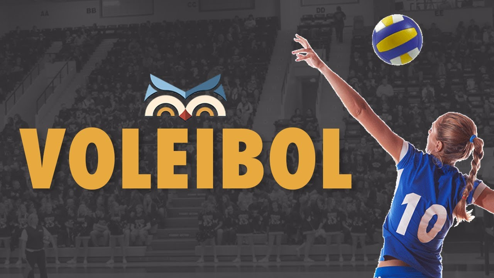
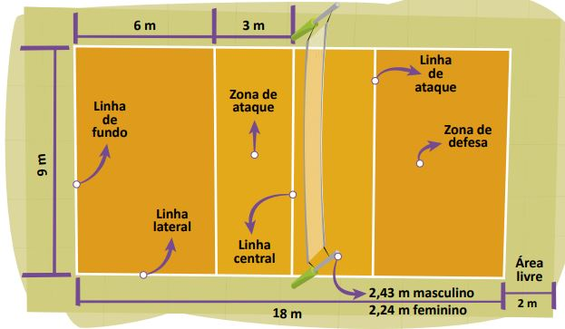
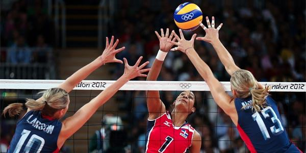

O voleibol ou vôlei é um esporte praticado entre duas equipes numa quadra retangular (aberta ou fechada). Ela é dividida por uma rede colocada verticalmente sobre a linha central.
O voleibol é jogado com uma bola e inclui diversos passes com as mãos. O objetivo principal é lançar a bola por cima da rede e fazê-la tocar no chão do adversário.
As principais regras do vôlei são:
Cada equipe possui um técnico;
Uma partida é constituída de 5 sets;
Não existe tempo pré-determinado para cada set;
Cada set tem um máximo de 25 pontos com uma diferença mínima de 2 pontos;
Em caso de empate no set no final (24 x 24), a partida continua até que a diferença de dois pontos seja atingida (26 x 24, 27 x 25, etc.);
Após o saque, a equipe só pode tocar três vezes na bola;
Ganha a equipe que vencer três sets;
Se houver empate nos sets (2x2) o 5º set será decisivo.
O vôlei de quadra é formado por duas equipes com 6 jogadores em cada. No total, são 12 jogadores. Existem ainda 6 jogadores reserva.
Além do vôlei de quadra, há também o vôlei de praia. Diferente da quadra, o de praia é jogado na areia e contém somente quatro jogadores, sendo dois de cada equipe.
Cada jogador tem uma posição dentro da quadra, a qual apresenta uma ordem de rotação:
3 jogadores posicionam-se perto da rede;
3 jogadores posicionam-se na linha de trás.
As regras do voleibol incluem diversas faltas no saque, ataque, passe de bola, toques, posição, rotação de jogadores, dentre outros. Alguns exemplos de falta são:
Dois Toques: quando um jogador toca a bola duas vezes consecutivas ou a bola bate em várias partes de seu corpo.
Quatro Toques: quando a equipe toca na bola quatro vezes antes de enviá-la aos adversários.
Toque apoiado: quando um jogador se apoia em outro da sua equipe. Também é considerado falta se ele se apoia em alguma estrutura ou objeto dentro da área de jogo para golpear a bola.
Rotação: se a rotação entre os jogadores não acontecer de maneira correta na hora do saque, a equipe comete falta.
Rede: se jogar a bola entre o espaço das duas antenas próximas da rede, o jogador cometerá falta.
Os fundamentos do vôlei são:
Saque
Recepção
Levantamento
Ataque
Bloqueio
Cada jogada do vôlei tem início com os saques. O sacador, como é chamado o jogador que lança a bola, tem que arremessar a bola por cima da rede e dentro da quadra de seu adversário.
Se ele ultrapassar o limite, a bola vai retornar para seu adversário sacar. Note que quando a bola toca no chão do time adversário, ocorre a marcação de pontos.
A chamada “zona de saque” representa o local onde o jogador (sacador) deve permanecer para lançar a bola. Trata-se de uma área de 9 metros de largura situada após cada linha de fundo.
Os jogadores recebem o saque através do fundamento da recepção, geralmente feita través de recursos como a manchete ou o toque.
Os levantadores, como o próprio nome já indica, levantam a bola com a ponta dos dedos. Em seguida, passam aos atacantes que tentam marcar ponto ao lançar para o campo adversário.
Os atacantes colocam muita força na jogada e com um grande salto objetivam tocar o chão da equipe adversária para fazer o ponto.
Os adversários podem, no entanto, realizar um bloqueio ou defesa para que a bola volte e toque no chão da equipe que atacou.
Observe que os bloqueios são realizados por dois ou mais jogadores que estão posicionados próximos da rede. Sendo assim, para se defender contra o ataque do adversário eles saltam no mesmo momento.
O voleibol surgiu nos Estados Unidos em 1895. Seu criador foi o estadunidense William George Morgan (1870-1942). Na época, Morgan era chefe de Educação Física da “Associação Cristã de Moços” (ACM) em Massachusetts.
Sua ideia era criar um esporte que tivesse pouco impacto e contato físico entre os adversários, com o intuito de evitar lesões.
Primeiramente, o esporte foi chamado de “mintonette” e, pouco depois, de “volley ball”. Cinco anos após sua criação, o jogo foi levado para o Canadá e, mais tarde, conquistou outros países do mundo.
Na década de 40, o voleibol já era reconhecido mundialmente. Sendo assim, em 1947, em Paris, na França, foi fundada a Fédération Internationale de Volleyball (FIVB) - Federação Internacional de Voleibol, em português. Esse órgão é até hoje responsável por coordenar e organizar as atividades relacionadas com esse esporte.
Em 1949, aconteceu o primeiro campeonato mundial de voleibol para homens na Checoslováquia, no qual a Rússia saiu campeã. Três anos mais tarde, esse campeonato já incluiu o voleibol para mulheres, com vitória para o Japão.
A partir de 1964, o vôlei se tornou um esporte olímpico, o qual permanece até os dias atuais. Hoje ele possui muitas equipes e adeptos pelo mundo.